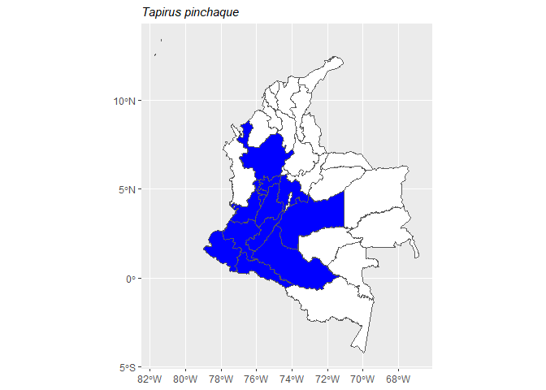

The goal of mammalcol is to allow easy access to the List of Mammal Species of Colombia.
Researchers can explore Colombia’s amazing variety of mammals using the mammalcol R package. This package includes information on 553 mammal species, making Colombia one of the world leaders in mammal diversity. The original data comes from the latest “Checklist of the mammals (Mammalia) of Colombia” by Ramírez-Chaves et al (2021). But It’s important to remember that the way scientists classify mammals keeps changing constantly, so the information in this package has been updated with the last checklist Mamíferos de Colombia, which is published and updated regularly by the Colombian Mammal Society.
Installation
You can install the development version of mammalcol from GitHub with:
# install.packages("devtools")
devtools::install_github("dlizcano/mammalcol")Example
Search database
This is a basic example which shows you how to search mammal names in Colombia using a vector of mammal names.
# define a vector with species to search for
splist <- c(
"Tapirus bairdii", "Tapirus pinchaque", "Tapirus terrestris",
"Tapirus terrestris", "Pudu mephistophiles", "Tapirus bairdii"
)
# search in database
search_mammalcol(splist)
#> The following names are repeated in the 'splist': Tapirus bairdii, Tapirus terrestris
#> name_submitted
#> 1 Tapirus bairdii
#> 2 Tapirus pinchaque
#> 3 Tapirus terrestris
#> 4 Pudu mephistophiles
#> taxonID
#> 1 gbif.org/species/2440897
#> 2 urn:lsid:catalogueoflife.org:taxon:4f2010e3-5e17-11e7-8cee-bc764e092680:col20170824
#> 3 urn:lsid:catalogueoflife.org:taxon:4f200f4b-5e17-11e7-8cee-bc764e092680:col20170824
#> 4 urn:lsid:catalogueoflife.org:taxon:4f167916-5e17-11e7-8cee-bc764e092680:col20170824
#> scientificNameID
#> 1 https://www.gbif.org/species/2440897
#> 2 http://www.itis.gov/servlet/SingleRpt/SingleRpt?search_topic=TSN&search_value=624999
#> 3 http://www.itis.gov/servlet/SingleRpt/SingleRpt?search_topic=TSN&search_value=625000
#> 4 http://www.itis.gov/servlet/SingleRpt/SingleRpt?search_topic=TSN&search_value=625074
#> scientificName
#> 1 Tapirus bairdii
#> 2 Tapirus pinchaque
#> 3 Tapirus terrestris
#> 4 Pudella mephistophiles
#> nameAccordingTo
#> 1 Tapirus bairdii (Gill, 1865) in GBIF Secretariat (2017). GBIF Backbone Taxonomy. Checklist dataset https://doi.org/10.15468/39omei accessed via GBIF.org on 2019-08-01.
#> 2 Tom Orrell (custodian), Dave Nicolson (ed). (2019). ITIS Global: The Integrated Taxonomic Information System (version Jun 2017). In: Species 2000 & ITIS Catalogue of Life, 2019 Annual Checklist (Roskov Y., Ower G., Orrell T., Nicolson D., Bailly N., Kirk P.M., Bourgoin T., DeWalt R.E., Decock W., Nieukerken E. van, Zarucchi J., Penev L., eds.). Digital resource at www.catalogueoflife.org/annual-checklist/2019. Species 2000: Naturalis, Leiden, the Netherlands. ISSN 2405-884X.
#> 3 Tom Orrell (custodian), Dave Nicolson (ed). (2019). ITIS Global: The Integrated Taxonomic Information System (version Jun 2017). In: Species 2000 & ITIS Catalogue of Life, 2019 Annual Checklist (Roskov Y., Ower G., Orrell T., Nicolson D., Bailly N., Kirk P.M., Bourgoin T., DeWalt R.E., Decock W., Nieukerken E. van, Zarucchi J., Penev L., eds.). Digital resource at www.catalogueoflife.org/annual-checklist/2019. Species 2000: Naturalis, Leiden, the Netherlands. ISSN 2405-884X.
#> 4 Barrio, J., Gutiérrez, E.E. and D'Elía, G. 2024-03-01. The first living cervid species described in the 21st century and revalidation of Pudella (Artiodactyla). Journal of Mammalogy 105(3):577-588.
#> kingdom phylum class order family genus specificEpithet
#> 1 Animalia Chordata Mammalia Perissodactyla Tapiridae Tapirus bairdii
#> 2 Animalia Chordata Mammalia Perissodactyla Tapiridae Tapirus pinchaque
#> 3 Animalia Chordata Mammalia Perissodactyla Tapiridae Tapirus terrestris
#> 4 Animalia Chordata Mammalia Artiodactyla Cervidae Pudella mephistophiles
#> taxonRank scientificNameAuthorship taxonomicStatus taxonRemarks
#> 1 Especie (Gill, 1865) Válido Elevación (m): 0-1000
#> 2 Especie (Roulin, 1829) Válido Elevación (m): 1400-4000
#> 3 Especie (Linnaeus, 1758) Válido Elevación (m): 0-2400
#> 4 Especie (de Winton, 1896) Válido Elevación (m): 3000-3500
#> language rightsHolder
#> 1 es Sociedad Colombiana de Mastozoología
#> 2 es Sociedad Colombiana de Mastozoología
#> 3 es Sociedad Colombiana de Mastozoología
#> 4 es Sociedad Colombiana de Mastozoología
#> bibliographicCitation
#> 1 HERSHKOVITZ P. 1954. Mammals of northern Colombia. Preliminary report No. 7: Tapirs (genus Tapirus), with a systematic review of American species. Proceedings of the United States National Museum 103:465-496.
#> 2 ARIAS-ALZATE A, CC DOWNER, C DELGADO-V y J SÁNCHEZ-LONDOÑO. 2010. Un registro de tapir de montaña (Tapirus pinchaque) en el norte de la Cordillera Occidental de Colombia. Mastozoología Neotropical 17:111-116.
#> 3 ARIAS-ALZATE A, JA PALACIO VIEIRA y J MUÑOZ-DURAN. 2009. Nuevos registros de distribución y oferta de hábitat de la danta colombiana (Tapirus terrestris colombianus) en las tierras bajas del norte de la Cordillera Central (Colombia). Mastozoología Neotropical 16:19-25.
#> 4 ALBERICO M, A CADENA, JI HERNÁNDEZ-CAMACHO y Y MUÑOZ-SABA. 2000b. Mamíferos (Synapsida: Theria) de Colombia. Biota Colombiana 1:43-75.
#> inMDD Col_redlist
#> 1 1 EN A2cd+ B1ab (i,ii,iii)+ B2ab (i, ii, iii)
#> 2 1 EN A4cd
#> 3 1 VU A4cd
#> 4 0 <NA>
#> distribution
#> 1 Antioquia | Chocó | Córdoba
#> 2 Antioquia | Cauca | Cundinamarca | Huila | Meta | Nariño | Quindío | Risaralda | Tolima | Valle del Cauca | Caldas | Caquetá | Putumayo
#> 3 Antioquia | Amazonas | Arauca | Caquetá | Cauca | Cesar | Córdoba | Guainía | La Guajira | Meta | Magdalena | Vaupés | Vichada | Guaviare | Casanare | Norte de Santander | Putumayo
#> 4 Cauca | Huila | Nariño | Risaralda | Quindío | Tolima | Valle del Cauca
#> endemic english_name Distance
#> 1 No Central American Tapir 21
#> 2 No Mountain Tapir 77
#> 3 No Lowland Tapir 78
#> 4 No <NA> 77Search database with typos
mammalcol has the ability to identify and correct minor typos and lower case in the genus. Correcting potential typos or variations in species names through fuzzy matching is a crucial aspect of data management. This technique ensures precise retrieval by adeptly identifying and accommodating minor differences in input names, thus enhancing the reliability of analyses conducted on diverse, inconsistent, and ensemble data sets.
# vector with species names and intentional typos
splist <- c("Tapiru terrestre", "pudu mephistophiles", "tapirus bairdii")
# search in database
search_mammalcol(splist)
#> name_submitted
#> 1 Tapiru terrestre
#> 2 Pudu mephistophiles
#> 3 Tapirus bairdii
#> taxonID
#> 1 urn:lsid:catalogueoflife.org:taxon:4f200f4b-5e17-11e7-8cee-bc764e092680:col20170824
#> 2 urn:lsid:catalogueoflife.org:taxon:4f167916-5e17-11e7-8cee-bc764e092680:col20170824
#> 3 gbif.org/species/2440897
#> scientificNameID
#> 1 http://www.itis.gov/servlet/SingleRpt/SingleRpt?search_topic=TSN&search_value=625000
#> 2 http://www.itis.gov/servlet/SingleRpt/SingleRpt?search_topic=TSN&search_value=625074
#> 3 https://www.gbif.org/species/2440897
#> scientificName
#> 1 Tapirus terrestris
#> 2 Pudella mephistophiles
#> 3 Tapirus bairdii
#> nameAccordingTo
#> 1 Tom Orrell (custodian), Dave Nicolson (ed). (2019). ITIS Global: The Integrated Taxonomic Information System (version Jun 2017). In: Species 2000 & ITIS Catalogue of Life, 2019 Annual Checklist (Roskov Y., Ower G., Orrell T., Nicolson D., Bailly N., Kirk P.M., Bourgoin T., DeWalt R.E., Decock W., Nieukerken E. van, Zarucchi J., Penev L., eds.). Digital resource at www.catalogueoflife.org/annual-checklist/2019. Species 2000: Naturalis, Leiden, the Netherlands. ISSN 2405-884X.
#> 2 Barrio, J., Gutiérrez, E.E. and D'Elía, G. 2024-03-01. The first living cervid species described in the 21st century and revalidation of Pudella (Artiodactyla). Journal of Mammalogy 105(3):577-588.
#> 3 Tapirus bairdii (Gill, 1865) in GBIF Secretariat (2017). GBIF Backbone Taxonomy. Checklist dataset https://doi.org/10.15468/39omei accessed via GBIF.org on 2019-08-01.
#> kingdom phylum class order family genus specificEpithet
#> 1 Animalia Chordata Mammalia Perissodactyla Tapiridae Tapirus terrestris
#> 2 Animalia Chordata Mammalia Artiodactyla Cervidae Pudella mephistophiles
#> 3 Animalia Chordata Mammalia Perissodactyla Tapiridae Tapirus bairdii
#> taxonRank scientificNameAuthorship taxonomicStatus taxonRemarks
#> 1 Especie (Linnaeus, 1758) Válido Elevación (m): 0-2400
#> 2 Especie (de Winton, 1896) Válido Elevación (m): 3000-3500
#> 3 Especie (Gill, 1865) Válido Elevación (m): 0-1000
#> language rightsHolder
#> 1 es Sociedad Colombiana de Mastozoología
#> 2 es Sociedad Colombiana de Mastozoología
#> 3 es Sociedad Colombiana de Mastozoología
#> bibliographicCitation
#> 1 ARIAS-ALZATE A, JA PALACIO VIEIRA y J MUÑOZ-DURAN. 2009. Nuevos registros de distribución y oferta de hábitat de la danta colombiana (Tapirus terrestris colombianus) en las tierras bajas del norte de la Cordillera Central (Colombia). Mastozoología Neotropical 16:19-25.
#> 2 ALBERICO M, A CADENA, JI HERNÁNDEZ-CAMACHO y Y MUÑOZ-SABA. 2000b. Mamíferos (Synapsida: Theria) de Colombia. Biota Colombiana 1:43-75.
#> 3 HERSHKOVITZ P. 1954. Mammals of northern Colombia. Preliminary report No. 7: Tapirs (genus Tapirus), with a systematic review of American species. Proceedings of the United States National Museum 103:465-496.
#> inMDD Col_redlist
#> 1 1 VU A4cd
#> 2 0 <NA>
#> 3 1 EN A2cd+ B1ab (i,ii,iii)+ B2ab (i, ii, iii)
#> distribution
#> 1 Antioquia | Amazonas | Arauca | Caquetá | Cauca | Cesar | Córdoba | Guainía | La Guajira | Meta | Magdalena | Vaupés | Vichada | Guaviare | Casanare | Norte de Santander | Putumayo
#> 2 Cauca | Huila | Nariño | Risaralda | Quindío | Tolima | Valle del Cauca
#> 3 Antioquia | Chocó | Córdoba
#> endemic english_name Distance
#> 1 No Lowland Tapir 76
#> 2 No <NA> 77
#> 3 No Central American Tapir 21Produce a map
The function mammalmap produces basic a map of distribution at the “Departamento” level for a single species.
# write a species name in the function to map it
mammalmap ("Tapirus pinchaque")
Remove the legend
Using the parameter legend=FALSE
# write a species name in the function to map it
mammalmap("Tapirus pinchaque", legend=FALSE)
Search mammals present by departamento
Use the departamento name or a vector of departamentos to get the mammal species present with the function sp_by_depto. The argument type = “any” retrieve the mammals present in any of those departamentos.
occ.any <- sp_by_depto (c("Arauca", "Norte de Santander"), type = "any")
head(occ.any)
#> scientificName family order
#> 1 Vampyressa voragine Phyllostomidae Chiroptera
#> 2 Odocoileus goudotii Cervidae Artiodactyla
#> 3 Dasypus fenestratus Dasypodidae Cingulata
#> 4 Leopardus pardinoides Felidae Carnivora
#> 5 Chilomys fumeus Cricetidae Rodentia
#> 6 Melanomys columbianus Cricetidae Rodentia
#> locality
#> 1 Casanare | Norte de Santander
#> 2 Boyacá | Cundinamarca | Santander | Norte de Santander
#> 3 Antioquia | Atlántico | Bolívar | Boyacá | Caldas | Cauca |Chocó | Córdoba | Cundinamarca | Huila | Nariño | La Guajira | Norte de Santander | Quindío | Risaralda | Santander | Sucre | Tolima | Valle del Cauca
#> 4 Antioquia | Boyacá | Caldas | Cauca | Huila | Meta | Nariño | Putumayo | Quindío | Risaralda | Santander | Valle del Cauca | Caquetá | Amazonas | Arauca | Córdoba | Guainía | Tolima
#> 5 Norte de Santander
#> 6 Magdalena | Norte de SantanderThe argument type = “only” retrieves species present only in that departamento and in no other departamento.
occ.only <- sp_by_depto(c("Norte de Santander"), type = "only")
head(occ.only)
#> scientificName family order locality
#> 1 Chilomys fumeus Cricetidae Rodentia Norte de SantanderThe argument all retrieves species present in both departamentos. The argument taxa limit the search to one order. occ.bats has the bats present in Arauca and Norte de Santander.
occ.all <- sp_by_depto(c("Arauca", "Norte de Santander"), type = "all")
occ.bats <- sp_by_depto(c("Arauca", "Norte de Santander"), type = "all", taxa = "Chiroptera")
head(occ.bats)
#> scientificName family order
#> 1 Dermanura phaeotis Phyllostomidae Chiroptera
#> 2 Molossus rufus Molossidae Chiroptera
#> 3 Cynomops planirostris Molossidae Chiroptera
#> 4 Vampyressa thyone Phyllostomidae Chiroptera
#> 5 Enchisthenes hartii Phyllostomidae Chiroptera
#> 6 Micronycteris microtis Phyllostomidae Chiroptera
#> locality
#> 1 Antioquia | Cauca | Chocó | Nariño | Quindío | Risaralda | Valle del Cauca | Amazonas | Arauca | Caldas | Caquetá | Córdoba | Guainía | Magdalena | Norte de Santander | Putumayo | Santander | Tolima
#> 2 Arauca | Caldas | Norte de Santander | Tolima | Putumayo | Guaviare | Amazonas | Antioquia | Atlántico | Caquetá | Casanare | Guainía | Meta | Vichada
#> 3 Amazonas | Arauca | Boyacá | Casanare | Meta | Vichada | Caquetá | Cundinamarca | Norte de Santander | Putumayo | Guainía | Sucre
#> 4 Caldas | Cauca | Quindío | Risaralda | Amazonas | Caquetá | Guaviare | Meta | Putumayo | Antioquia | Arauca | Casanare | Chocó | Córdoba | Guainía | Magdalena | Nariño | Norte de Santander | Sucre | Tolima | Valle del Cauca | Vaupés | Vichada
#> 5 Caldas | Cauca | Cundinamarca | Quindío | Risaralda | Amazonas | Caquetá | Putumayo | Antioquia | Arauca | Casanare | Cesar | Chocó | Guainía | Huila | Magdalena | Nariño | Norte de Santander | Putumayo | Tolima | Valle del Cauca
#> 6 Cundinamarca | Magdalena | Amazonas | Caquetá | Guaviare | Arauca | Casanare | Chocó | Córdoba | Guainía | Norte de Santander | TolimaValidate mammal species data based on geographic coordinates
Use the function mamm_coords_validator to validate if your record is a valid species according to the Checklist of the mammals (Mammalia) of Colombia and if the coordinates are correct.
The function uses as input a dataframe with species distribution data. The dataframe must contain at least the 3 columns:
- species as: Genus species
- decimalLongitude
- decimalLatitude
The data frame may contain many other columns. You should indicate the column containing the species names using the argument sp_names.
For this example we are using a data frame with the required three columns, and many columns more.
head (test_data_coordiantes)
#> gbifID datasetKey
#> 1 4415797342 db01508a-6289-4796-b58c-17a3f154085e
#> 2 4415797340 db01508a-6289-4796-b58c-17a3f154085e
#> 3 4415797336 db01508a-6289-4796-b58c-17a3f154085e
#> 4 3891619324 db01508a-6289-4796-b58c-17a3f154085e
#> 5 3891619313 db01508a-6289-4796-b58c-17a3f154085e
#> 6 3382034331 62b3e751-30d6-420b-8190-fa043d885df7
#> occurrenceID kingdom
#> 1 FH:Boyaca:HMP_AES:Fauna_Fase4:114 Animalia
#> 2 FH:Boyaca:HMP_AES:Fauna_Fase4:117 Animalia
#> 3 FH:Boyaca:HMP_AES:Fauna_Fase4:083 Animalia
#> 4 FH:Boyaca:HMP_AES:Fauna_2022:028 Animalia
#> 5 FH:Boyaca:HMP_AES:Fauna_2022:014 Animalia
#> 6 IAvH:CBB:COLOMBIA:TREMARCTOSORNATUS:MUESTRA:I2D-BIO_2021_039:34 Animalia
#> phylum class order family genus species
#> 1 Chordata Mammalia Carnivora Ursidae Tremarctos Tremarctos ornatus
#> 2 Chordata Mammalia Carnivora Ursidae Tremarctos Tremarctos ornatus
#> 3 Chordata Mammalia Carnivora Ursidae Tremarctos Tremarctos ornatus
#> 4 Chordata Mammalia Carnivora Ursidae Tremarctos Tremarctos ornatus
#> 5 Chordata Mammalia Carnivora Ursidae Tremarctos Tremarctos ornatus
#> 6 Chordata Mammalia Carnivora Ursidae Tremarctos Tremarctos ornatus
#> infraspecificEpithet taxonRank scientificName
#> 1 NA SPECIES Tremarctos ornatus (F.G.Cuvier, 1825)
#> 2 NA SPECIES Tremarctos ornatus (F.G.Cuvier, 1825)
#> 3 NA SPECIES Tremarctos ornatus (F.G.Cuvier, 1825)
#> 4 NA SPECIES Tremarctos ornatus (F.G.Cuvier, 1825)
#> 5 NA SPECIES Tremarctos ornatus (F.G.Cuvier, 1825)
#> 6 NA SPECIES Tremarctos ornatus (F.G.Cuvier, 1825)
#> verbatimScientificName verbatimScientificNameAuthorship countryCode
#> 1 Tremarctos ornatus (F.G.Cuvier, 1825) CO
#> 2 Tremarctos ornatus (F.G.Cuvier, 1825) CO
#> 3 Tremarctos ornatus (F.G.Cuvier, 1825) CO
#> 4 Tremarctos ornatus (F.G.Cuvier, 1825) CO
#> 5 Tremarctos ornatus (F.G.Cuvier, 1825) CO
#> 6 Tremarctos ornatus Cuvier, 1825 CO
#> locality stateProvince
#> 1 Vereda Gúanica Molino Boyacá
#> 2 Vereda Gúanica Molino Boyacá
#> 3 Vereda Gúanica Molino Boyacá
#> 4 Vereda Gúanica Molino Boyacá
#> 5 Vereda Zanja Arriba Boyacá
#> 6 Sendero desamparo Laguna Animas PNN Doña Juana Cascabel Nariño
#> occurrenceStatus individualCount publishingOrgKey
#> 1 PRESENT 1 85aae44a-2a4c-4a3f-92cc-a1a8d27b90fa
#> 2 PRESENT 1 85aae44a-2a4c-4a3f-92cc-a1a8d27b90fa
#> 3 PRESENT 1 85aae44a-2a4c-4a3f-92cc-a1a8d27b90fa
#> 4 PRESENT 1 85aae44a-2a4c-4a3f-92cc-a1a8d27b90fa
#> 5 PRESENT 1 85aae44a-2a4c-4a3f-92cc-a1a8d27b90fa
#> 6 PRESENT NA 2a7e3080-28a9-11dd-97cd-b8a03c50a862
#> decimalLatitude decimalLongitude coordinateUncertaintyInMeters
#> 1 5.113852 -73.32513 NA
#> 2 5.112645 -73.32707 NA
#> 3 5.113852 -73.32513 NA
#> 4 5.113944 -73.32509 NA
#> 5 5.159837 -73.31094 NA
#> 6 1.582500 -76.88140 NA
#> coordinatePrecision elevation elevationAccuracy depth depthAccuracy
#> 1 NA 2320 0 NA NA
#> 2 NA 2370 0 NA NA
#> 3 NA 2320 0 NA NA
#> 4 NA 2310 0 NA NA
#> 5 NA 2390 0 NA NA
#> 6 NA 3311 0 NA NA
#> eventDate day month year taxonKey speciesKey basisOfRecord
#> 1 2023-03-10/2023-05-03 NA NA 2023 2433401 2433401 MACHINE_OBSERVATION
#> 2 2023-02-14/2023-05-03 NA NA 2023 2433401 2433401 MACHINE_OBSERVATION
#> 3 2023-02-14/2023-03-10 NA NA 2023 2433401 2433401 MACHINE_OBSERVATION
#> 4 2022-02-27 27 2 2022 2433401 2433401 MACHINE_OBSERVATION
#> 5 2022-02-10 10 2 2022 2433401 2433401 MACHINE_OBSERVATION
#> 6 2019-09-19 19 9 2019 2433401 2433401 MATERIAL_SAMPLE
#> institutionCode
#> 1 Fundación Humedales (Fund. Humedales)
#> 2 Fundación Humedales (Fund. Humedales)
#> 3 Fundación Humedales (Fund. Humedales)
#> 4 Fundación Humedales (Fund. Humedales)
#> 5 Fundación Humedales (Fund. Humedales)
#> 6 Instituto de Investigación de Recursos Biológicos Alexander von Humboldt (IAvH)
#> collectionCode
#> 1
#> 2
#> 3
#> 4
#> 5
#> 6 Colección de Tejidos del Instituto de Investigación de Recursos Biológicos Alexander von Humboldt (IAvH-CT)
#> catalogNumber recordNumber identifiedBy
#> 1 Juan Camilo Muñoz
#> 2 Juan Camilo Muñoz
#> 3 Juan Camilo Muñoz
#> 4 Juan Camilo Muñoz
#> 5 Juan Camilo Muñoz
#> 6 En proceso de catalogación MNGC001 Mesias Nicodemo Guerrero Cerón
#> dateIdentified license rightsHolder recordedBy
#> 1 2023-05-08T00:00:00 CC_BY_NC_4_0 Juan Camilo Muñoz
#> 2 2023-05-08T00:00:00 CC_BY_NC_4_0 Juan Camilo Muñoz
#> 3 2023-03-13T00:00:00 CC_BY_NC_4_0 Juan Camilo Muñoz
#> 4 2022-05-22T00:00:00 CC_BY_NC_4_0 Juan Camilo Muñoz
#> 5 2022-05-22T00:00:00 CC_BY_NC_4_0 Juan Camilo Muñoz
#> 6 2019-09-19T00:00:00 CC_BY_NC_4_0 Mesias Nicodemo Guerrero Cerón
#> typeStatus establishmentMeans lastInterpreted mediaType
#> 1 NA NA 2024-01-25T01:06:42.265Z
#> 2 NA NA 2024-01-25T01:06:42.247Z
#> 3 NA NA 2024-01-25T01:06:43.123Z
#> 4 NA NA 2024-01-25T01:06:42.614Z
#> 5 NA NA 2024-01-25T01:06:43.207Z
#> 6 NA NA 2024-01-26T10:15:23.806Z
#> issue
#> 1
#> 2
#> 3
#> 4
#> 5
#> 6 MULTIMEDIA_URI_INVALID;INSTITUTION_MATCH_NONERemember to add the argument sp_names, indicating the column with the species names.
validated_data <- mamm_coords_validator(test_data_coordiantes, sp_names = "species")
#> 1 species found in the matrix and 1 is/are valid.
#> Validation Finished.
#> A total of 20 records were evaluated. The evaluation results are recorded in the "validation_result" column as follows:
#> - 0 = Valid species but records not registered within the analyzed boundaries.
#> - 1 = Valid species and coordinates according to official publications.
#> - 2 = Valid species and coordinates are registered in the ocean.
#> - 3 = Valid species and coordinates off the limits of the ocean administrative boundaries. We recommend reviewing the location manually.
#> - 4 = Not valid species. Not validated. Try `search_mammalcol()` to fix typos on species names.See validation table
head (validated_data[,c("species", "validation_result")])
#> species validation_result
#> 110 Tremarctos ornatus 1
#> 2 Tremarctos ornatus 1
#> 3 Tremarctos ornatus 1
#> 4 Tremarctos ornatus 1
#> 5 Tremarctos ornatus 1
#> 10 Tremarctos ornatus 1If you find a species in a new department please consider writing a note for Mammalogy Notes extending the distribution.
Sugested citation
citation("mammalcol")
#> To cite mammalcol package in publications use:
#>
#> Lizcano, DJ. et al., (2025). mammalcol: Access to the List of Mammal
#> Species of Colombia. R package version 0.2.5
#>
#> A BibTeX entry for LaTeX users is
#>
#> @Manual{,
#> title = {mammalcol: Access to the List of Mammal Species of Colombia},
#> author = {Diego J. Lizcano and Cristian A. Cruz-Rodríguez and Andres F. Suárez-Castro and Baltazar González and Alejandra Bonilla-Sánchez and Camilo A. Calderón-Acevedo},
#> year = {2025},
#> note = {R data package version 0.2.5},
#> url = {https://dlizcano.github.io/mammalcol/},
#> }
#>
#> To cite just the original mammalcol dataset, please use: Mammals of
#> Colombia / Mamíferos de Colombia. SCMas: <doi:10.15472/kl1whs>, but
#> keep in mind taxonomy is dinamic and have changed.To cite just the original mammalcol dataset, please use: Mammals of Colombia / Mamíferos de Colombia. SCMas: doi:10.15472/kl1whs, but keep in mind: taxonomy is dinamic and have changed.
Lizcano, DJ. et al. (2025). mammalcol: Access to the List of Mammal Species of Colombia. R package version 0.2.5